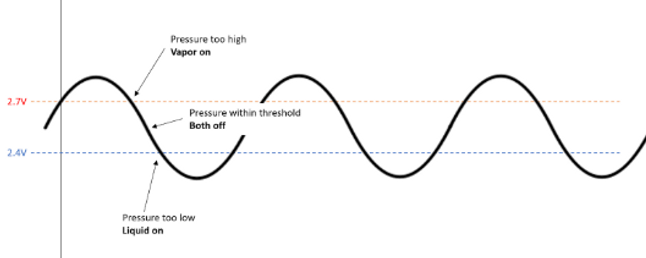
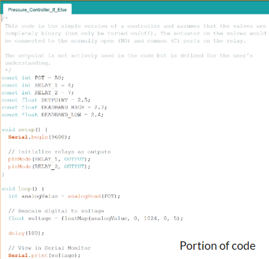
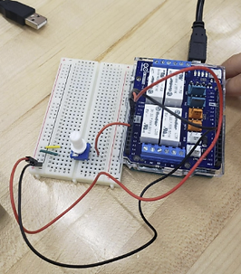
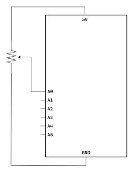
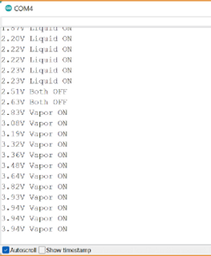
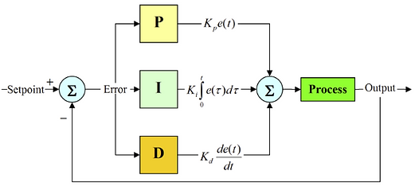
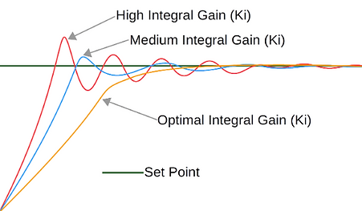
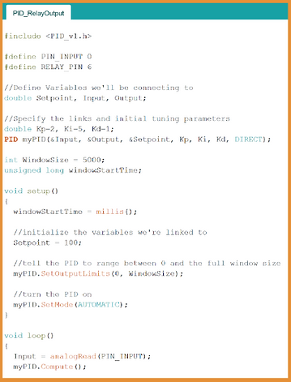
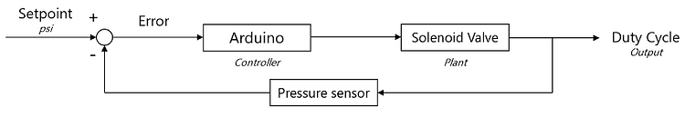

VEIR SUMMER INTERNSHIP
JUNE-AUGUST 2022

During the summer of 2022, I had the pleasure of working at VEIR, a clean-energy
startup working to modernize the grid by integrating high temperature
superconductors and cryogenic cooling into transmission infrastructure.
I was actually the company's first intern!
I was ecstatic to expand my skills in a whole slew of fields:
mechanical engineering, electrical engineering, and design.
I was also introduced to so many interesting fields that I will
continue to explore throughout my engineering journey:
high-temperature superconductors, quantum computing, and controls engineering
to name a few.
Scroll down to learn more about my work while at VEIR!
The projects/tasks are as follows:
- Pressure controller using Arduino
- Liquid nitrogen conditioner design
- 3D CAD Modeling (crossarms, insulators, power supply)
- Machining & soldering assistance
PRESSURE CONTROLLER USING ARDUINO
In order to automatically adjust the pressure difference
between two liquid nitrogen tanks, I created
prototype relay-controlled and PID pressure controllers.
This was my first time working with an Arduino and I really
enjoyed mixing programming with electrical engineering.
This project was a prototype for my coworker to then adjust
as the pressure sensor valves came in. Since I didn't have
sensors and valves to test my code on, I used a relay shield
to ensure that my code was working as expected.

Diagram of the problem. These deadband values are arbitrary.
RELAY-CONTROLLED
In the case that the actual implementation requires a simpler controller,
I created this relay-controlled pressure controller. As shown in the diagram above,
if the pressure goes above a certain level,
the vapor valve turns on and vice versa.
I used two relays to represent these two valves.
I used a potentiometer as an input and utilized the serial monitor
in the Arduino IDE to track how much voltage (AKA pressure) was being inputted.

Screenshot of relay-controlled code.

From left to right: relay-controlled circuit; schematic diagram of relay-controlled circuit; serial monitor debugging.
PID CONTROLLER
In the case that the actual implementation requires a more sensitive controller,
I researched the implementation of a PID controller.
PID controller can get very mathematically complex and can be quite difficult
to tune. This was my first introduction to controls engineering through PID
controllers, and I found the process of it very interesting,
albeit the fact that it got quite complex at times.
PID controllers can utilize proportional (P), integral (I), and derivative (D) calculations,
but this type of controller can be created with any amount of these three parts.
Almost 90% of controllers in industry are some level of PID controller.
PARTS OF A PID CONTROLLER
Proportional: Big immediate reaction on the output.
Derivative: Tracks the past, since it's adding up values over time.
Integral: Predicts where the output is going.
Tuning the PID controller to the right settings can also be extremely challenging.
The way to tune a PID controller is to adjust the constant in the beginning of
each of the PID calculations.

Diagram of a general PID controller (left); Example of different ways to tune a PID controller (right).
Since the company did not have pressure sensor valves to test on, there wasn't a way for me to tune the PID controller.
I spent time researching the best libraries to use and understanding how PID controllers work and how to tune them.
Overall, I had a great time with this project and look forward to continuing to explore controls engineering and
working with Arduino.

PID controller code utilizing an open-source PID library.

Cycle of this PID controller. In constant feedback loop.